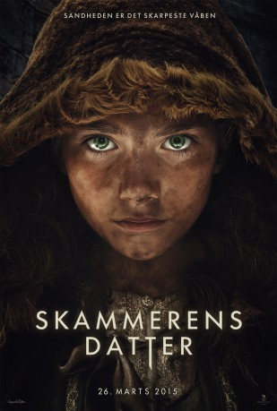
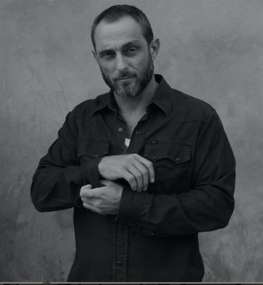

#8465 Die Hüterin der Wahrheit - Dinas Bestimmung
 
 IMDB-Wertung: 6.0 / 10
IMDB-Wertung: 6.0 / 10  Metascore: 0
Metascore: 0 
The Shamer's daughter, Dina, has unwillingly inherited her mother's supernatural ability. She can look straight into the soul of other people, making them feel ashamed of themselves. When the sole heir to the throne is wrongfully accused of the horrible murders of his family, Dina's mother is lured to Dunark under false pretenses to make him confess. Neglecting to use her ability for the wrong purposes, she is taken prisoner. It is now up to Dina to uncover the truth of the murders, but soon she finds herself whirled into a dangerous power struggle with her own life at risk. In a semi realistic medieval fantasy world with Dragons and Witchcraft, Dina and her family are thrown into the adventure of a lifetime in order to put the rightful heir to the Kingdom of Dunark on the Throne.
Jahr: 2015
Dauer: 96 Minuten
FSK: 12
Land: Dänemark Studio: PolybandTonspuren:
Untertitel: Deutsch,
Auflösung: 1080p (1920x804) Größe: 8898 MB
Genre: Abenteuer, Fantasy
Regisseur: Kenneth Kainz
Drehbuch: Anders Thomas Jensen
Soundtrack: Jeppe Kaas
Darsteller:
 Jakob Oftebro als Nicodemus
Jakob Oftebro als Nicodemus-  Roland Møller als Hannes
- Allan Hyde als Davin
 Maria Bonnevie als Melussina / Dinas mor
Maria Bonnevie als Melussina / Dinas mor Søren Malling als Våbenmester
Søren Malling als Våbenmester- Stina Ekblad als Dama Lizea
 Jim High als Prison Guard
Jim High als Prison Guard- Joi Johannsson als Dres
 Laura Bro als Fru Petri
Laura Bro als Fru Petri- Austa Lea Jespersen als Adela
- Mads Riisom als
- Adam Ild Rohweder als Aun
- Lado Hadzic als Vagtmesteren
- Peter Plaugborg als Drakan
- Rebecca Emilie Sattrup als Dina
- Olaf Johannessen als Mester Maunus
- Esben Dalgaard Andersen als Rikert
- Henrik Noël Olesen als Mølleren
- Curtis Matthew als
- Niklas Herskind als Esmer
- Mylena Barrios als Girl 2
- Selma Iljazovski als Melli
- Svend Johansen als Lovmesteren
- Petra Scott Nielsen als Rosa
- Petra Maria Scott als Rosa
- Juliana Moska als
- Oliver Methling Søndergaard als Drenge #1 sc. 68
- Malthe Miehe-Renard als Soldat, sc. 5
- Stefania Omarsdottir als Rosas mor
- Michael Hamory als Ryttaren fra Dunark
- Jaques Lauritsen als Bager
- Adél Frejová als
- Osvald Boisen als
- Julie Knuth Brøllund Hansen als Cilla
- Jakub Nemcok als
- Matej Trochta als
- Lucie Furmanová als
Datei: X:\2-Dilogie(G-M)\Hüterin der Wahrheit\Hüterin der Wahrheit - Dinas Bestimmung, Die (2015, FSK12, 1920x804).mkv seit 06.03.2018
Festplatte: HD Collection-2(A-Z)-3(A-M)
 Alle Filme aus Gruppe '2-Dilogie(G-M)\Hüterin der Wahrheit'
Alle Filme aus Gruppe '2-Dilogie(G-M)\Hüterin der Wahrheit'